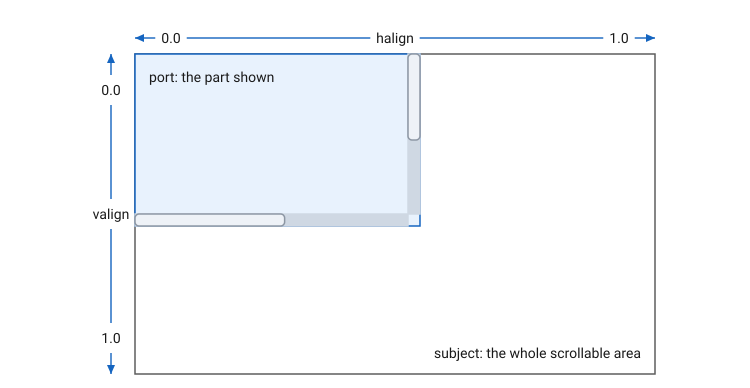

Ports and Scrollers
Overview
A port shows part of an element larger than the space it is given: it lays its subject out at the subject’s minimum size, moves it by its alignment, and clips it to its own bounds. A scroller is a port the user moves, with scroll bars, the wheel and the keyboard.

Ports
port, vport and hport are proxies (see
Proxies):
-
portmoves its subject on both axes. -
vportmoves it vertically; its width is the subject’s. -
hportmoves it horizontally; its height is the subject’s.
On each axis it moves on, a port’s alignment runs from 0.0, the subject’s
top or left edge at the port’s, to 1.0, its bottom or right edge at the
port’s; between, the subject is that far along. halign and valign set
and read it. The port’s limits are at least 32 on each axis it moves
on, and at most the subject’s maximum.
get_port_bounds(ctx) gives the bounds of the innermost port around the
element ctx belongs to, or the view’s bounds if there is none: the part
of the view the element can be seen in.
Scrollers
scroller(subject) is a port with scroll bars; vscroller scrolls only
vertically and hscroller only horizontally. A bar appears on an axis
when the subject is larger than the scroller on it, along the right edge
for vertical scrolling and the bottom for horizontal, its thumb in
proportion to the part shown. Content that fits on an axis does not
scroll on it.
The user scrolls by:
-
the wheel, by the distance it turns;
-
dragging a thumb;
-
clicking a bar’s track, which moves a page, the thumb’s length;
-
Home and End, to the top and the bottom, and Page Up and Page Down, a page at a time, when there is a vertical bar.
Each scroll the user makes calls on_scroll(alignment), with the new
horizontal and vertical alignments as a point. set_alignment(p) sets
them from code, without the callback.
The traits, or’ed together as the second argument, change the scroller:
| Trait | Effect |
|---|---|
|
No bars: the wheel and the keyboard still scroll. |
|
No horizontal scrolling, as |
|
No vertical scrolling, as |
A scroller is scrollable. scroll_into_view(ctx, r) scrolls so that
r is in view, clear of the bars, and returns whether it scrolled. An
element inside a scroller reaches it with scrollable::find(ctx), which
walks up from the element’s context to the nearest scrollable; a text
box keeps its caret in view this way.
The bars' colours and width are the theme’s scrollbar_color and
scrollbar_width. A class derived from scroller_base can draw them its
own way by overriding draw_scroll_bar and scroll_bar_position.
Declaration
namespace cycfi::elements
{
class port_base : public proxy_base
{
public:
virtual double halign() const = 0;
virtual void halign(double val) = 0;
virtual double valign() const = 0;
virtual void valign(double val) = 0;
};
rect get_port_bounds(context const& ctx);
template <concepts::Element Subject>
inline proxy<remove_cvref_t<Subject>, port_element>
port(Subject&& subject);
template <concepts::Element Subject>
inline proxy<remove_cvref_t<Subject>, vport_element>
vport(Subject&& subject);
template <concepts::Element Subject>
inline proxy<remove_cvref_t<Subject>, hport_element>
hport(Subject&& subject);
class scrollable
{
public:
struct scrollable_context;
virtual bool scroll_into_view(context const& ctx, rect r) = 0;
static scrollable_context find(context const& ctx);
};
struct scrollable::scrollable_context
{
context const* context_ptr;
scrollable* scrollable_ptr;
bool scroll_into_view(rect r_);
};
enum
{
no_scrollbars = 1,
no_hscroll = 1 << 1,
no_vscroll = 1 << 2
};
class scroller_base : public port_element, public scrollable
{
public:
explicit scroller_base(int traits = 0);
using scroll_callback_f = std::function<void(point p)>;
scroll_callback_f on_scroll = [](point){};
void set_alignment(point p);
struct scrollbar_info;
virtual void draw_scroll_bar(context const& ctx, scrollbar_info const& info, point mp);
virtual rect scroll_bar_position(context const& ctx, scrollbar_info const& info);
};
struct scroller_base::scrollbar_info
{
double pos;
float extent;
rect bounds;
};
template <concepts::Element Subject>
inline proxy<remove_cvref_t<Subject>, scroller_base>
scroller(Subject&& subject, int traits = 0);
template <concepts::Element Subject>
inline proxy<remove_cvref_t<Subject>, scroller_base>
vscroller(Subject&& subject, int traits = 0);
template <concepts::Element Subject>
inline proxy<remove_cvref_t<Subject>, scroller_base>
hscroller(Subject&& subject, int traits = 0);
}port_element, vport_element and hport_element derive from
port_base. In scrollbar_info, pos is the alignment on the bar’s
axis, extent the subject’s length on it, and bounds the bar’s track.
Expressions
Notation
p-
A port or a scroller.
s-
A scroller.
e-
An element, the subject.
a-
A
double, an alignment from 0.0 to 1.0. pt-
A
pointof alignments, horizontal and vertical. t-
Traits, or’ed together.
ctx-
A context.
r-
A
rect.
Semantics
| Expression | Semantics |
|---|---|
|
A port moving |
|
A port moving |
|
A port moving |
|
Move the subject across: at 0.0 its left edge is at the port’s, at 1.0 its right edge. |
|
Move the subject up or down: at 0.0 its top edge is at the port’s, at 1.0 its bottom edge. |
|
The bounds of the innermost port around `ctx’s element, or the view’s. |
|
A scroller over |
|
A scroller over |
|
A scroller over |
|
|
|
Scroll from code, without the callback. Refresh after. |
|
Scroll so that |
|
The same, from an element inside the scroller. |
Example
Two lists, the second kept at the first’s place as the user scrolls it,
as in examples/sync_scrollbars:
auto make_cell = [](std::size_t index)
{
auto text = "Item " + std::to_string(index + 1);
return share(margin({10, 2, 10, 2}, align_left(label(text))));
};
auto first = share(vscroller(list(basic_cell_composer(1000, make_cell))));
auto second = share(vscroller(list(basic_cell_composer(1000, make_cell))));
first->on_scroll = [second, &view_](point p)
{
second->set_alignment(p);
view_.refresh(*second);
};
view_.content(
htile_spaced(20,
layer(hold(first), frame{}),
layer(hold(second), frame{})
),
background
);
Copyright (c) 2014-2026 Joel de Guzman. All rights reserved. Distributed under the MIT License